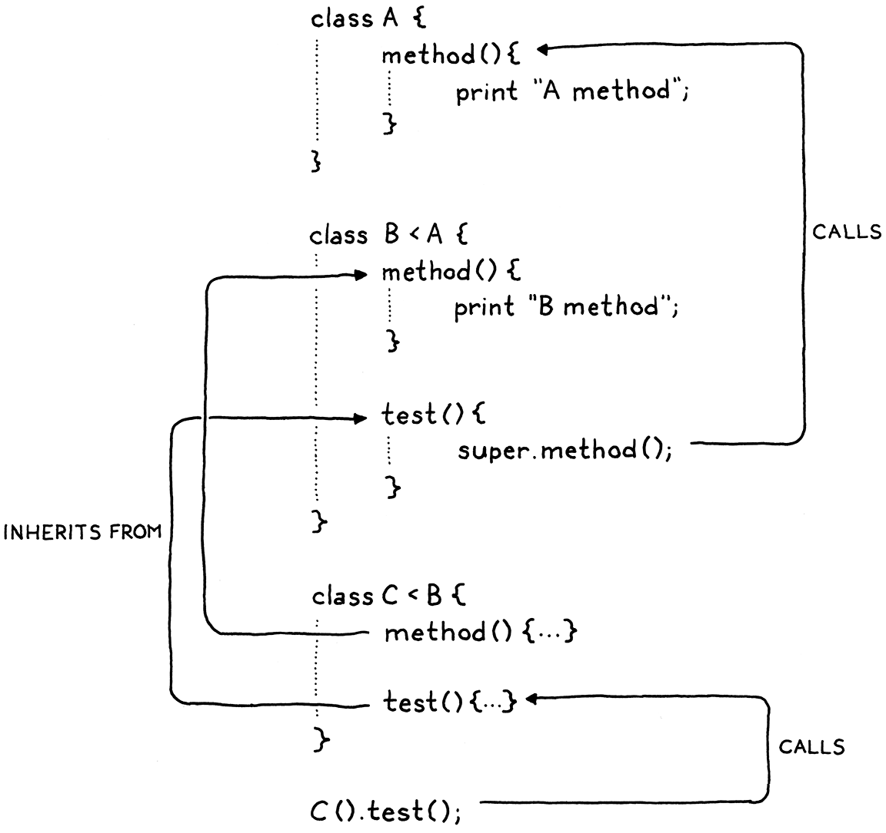
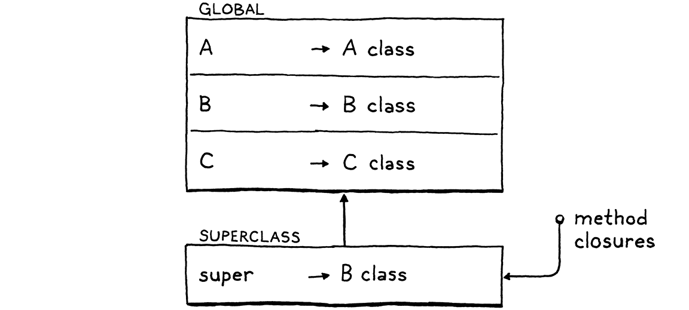
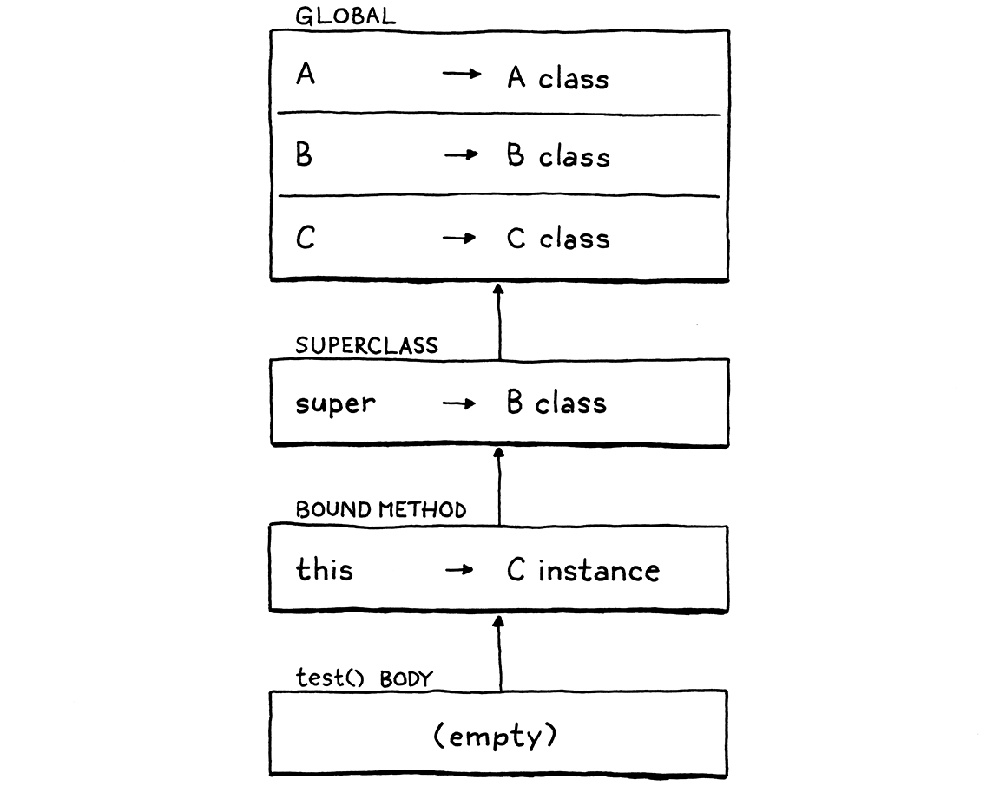

继承
我们曾是海里的团块，然后是鱼，然后是蜥蜴、老鼠，然后是猴子，中间还夹着成百上千种东西。 这只手曾经是鳍，这只手曾经长着利爪！我这副人类的嘴里，有狼的尖牙，有兔子的凿齿，还有牛 的磨牙！我们的血，和当年我们住的那片海一样咸！受到惊吓时，我们皮肤上的汗毛竖起来，就像 当年我们还长着毛那样。我们就是历史！在成为我们的路上，我们曾经是的每一样东西，我们至今 都还是。
特里·普拉切特，《帽子里的天空》
你敢信吗？我们走到了 第二部分 的最后一章。我们第一台 Lox 解释器快做完了。 上一章是一大团纠缠在一起的面向对象特性。我没法把它们彼此拆开，但我确实理清了 其中一块。这一章，我们给 Lox 的类支持补上最后一块——继承。
继承在面向对象语言里的历史，一路可以追溯到第一门这样的语言， Simula。早年间，克里斯滕·尼加德和奥勒-约翰·达尔在他们写的仿真程序里，注意到各个类之间存在 共通之处。继承给了他们一种办法，去复用那些相似部分的代码。
13 . 1超类与子类
既然这个概念叫「继承」，你大概会希望他们挑一套前后一致的比喻，管它们叫「父类」和「子类」吧，可那样 可哪有那么便宜的事。早年间，C. A. R. 霍尔造出「子类」这个词，用来指一个精修 了另一种类型的记录类型。Simula 借用了这个词，指一个从另一个类继承而来的类。我觉得直到 Smalltalk 出现，才有人把拉丁语前缀翻过来，用「超类」指这段关系的另一头。从 C++ 那边，你还会听到 「基类」和「派生类」的说法。我大体上就沿用「超类」和「子类」。
我们支持继承的第一步，是在声明类时能指定一个超类。这件事的语法花样很多。C++ 和 C# 在子类名后面放
一个 :，跟上超类名。Java 改用 extends。Python 把超类（们）放进类名后面的圆括号里。Simula 把超类
的名字放在 class 前面。
事情都到这份上了，我不太想再给词法分析器加一个新的保留字或词法单元。我们既没有 extends，连 :
也没有，所以我们跟 Ruby 学，用一个小于号（<）。
class Doughnut { // 甜甜圈的那些通用东西…… } class BostonCream < Doughnut { // 波士顿奶油专属的东西…… }
为了把它揉进语法，我们在已有的 classDecl 规则里加一条新的可选子句。
classDecl → "class" IDENTIFIER ( "<" IDENTIFIER )? "{" function* "}" ;
类名之后，你可以放一个 <，再跟上超类的名字。超类子句是可选的，因为你并不是非得有超类。和
Java 之类某些面向对象语言不同，Lox 没有一个人人都继承的根「Object」类，所以当你省略超类子句时，
这个类就没有超类，连隐式的都没有。
我们想把这个新语法捕捉进类声明的 AST 节点。
"Block : List<Stmt> statements",
在 main() 内
替换 1 行
"Class : Token name, Expr.Variable superclass," + " List<Stmt.Function> methods",
"Expression : Expr expression",
把超类名存成一个 Expr.Variable 而不是 Token，你也许会感到意外。语法把超类子句限制为单个标识符，
但在运行时，那个标识符会被当作一次变量访问来求值。趁着在解析器里还早，把这个名字包进一个
Expr.Variable，我们就得到一个对象，可以让作用域解析器把解析信息挂在上面。
新的解析器代码直接照着语法来。
Token name = consume(IDENTIFIER, "Expect class name.");
在 classDeclaration() 内
Expr.Variable superclass = null;
if (match(LESS)) {
consume(IDENTIFIER, "Expect superclass name.");
superclass = new Expr.Variable(previous());
}
consume(LEFT_BRACE, "Expect '{' before class body.");
一旦我们（可能）解析出了一个超类声明，就把它存进 AST。
consume(RIGHT_BRACE, "Expect '}' after class body.");
在 classDeclaration() 内
替换 1 行
return new Stmt.Class(name, superclass, methods);
}
如果我们没解析出超类子句，超类表达式就会是 null。我们得确保后面几趟遍历都检查这一点。第一趟就是
作用域解析器。
define(stmt.name);
在 visitClassStmt() 内
if (stmt.superclass != null) {
resolve(stmt.superclass);
}
beginScope();
类声明 AST 节点多了一个子表达式，所以我们遍历进去，把它解析掉。由于类通常声明在顶层，超类名多半会是 个全局变量，所以这通常干不出什么有用的事。不过，Lox 允许类声明出现在块里，所以超类名有可能指向一个 局部变量。那种情况下，我们得确保它被解析到。
因为就算好心的程序员有时也会写出古怪的代码，我们在这儿还得操心一个傻乎乎的边界情况。看看这个：
class Oops < Oops {}
这么写不可能有什么用，而且要是我们让运行时去跑它，会打破解释器关于「继承链里没有环」的预期。最稳妥 的做法是静态地检出这种情况，并把它报成一个错误。
define(stmt.name);
在 visitClassStmt() 内
if (stmt.superclass != null && stmt.name.lexeme.equals(stmt.superclass.name.lexeme)) { Lox.error(stmt.superclass.name, "A class can't inherit from itself."); }
if (stmt.superclass != null) {
假设代码解析时没有报错，AST 就传到了解释器。
public Void visitClassStmt(Stmt.Class stmt) {
在 visitClassStmt() 内
Object superclass = null; if (stmt.superclass != null) { superclass = evaluate(stmt.superclass); if (!(superclass instanceof LoxClass)) { throw new RuntimeError(stmt.superclass.name, "Superclass must be a class."); } }
environment.define(stmt.name.lexeme, null);
如果这个类有超类表达式，我们就求值它。由于它有可能求值成别的种类的对象，我们必须在运行时检查：我们 想当作超类的那个东西，确实是一个类。要是我们允许这样的代码，后果会很不妙：
var NotAClass = "I am totally not a class"; class Subclass < NotAClass {} // ?!
假设那个检查通过了，我们继续往下走。执行一个类声明，会把类的语法表示——它的 AST 节点——变成它在
运行时的表示，一个 LoxClass 对象。我们还得把超类也穿到那上面去。我们把超类传给构造函数。
methods.put(method.name.lexeme, function);
}
在 visitClassStmt() 内
替换 1 行
LoxClass klass = new LoxClass(stmt.name.lexeme, (LoxClass)superclass, methods);
environment.assign(stmt.name, klass);
构造函数把它存进一个字段。
在constructor LoxClass() 内
替换 1 行
LoxClass(String name, LoxClass superclass, Map<String, LoxFunction> methods) { this.superclass = superclass;
this.name = name;
它在这里声明：
final String name;
在类 LoxClass 内
final LoxClass superclass;
private final Map<String, LoxFunction> methods;
有了这个，我们就能定义作为其他类子类的类了。那么，拥有一个超类，实际上到底能做什么呢？
13 . 2继承方法
从另一个类继承，意味着凡是对超类成立的东西，对子类也或多或少应该成立。 在静态类型语言里，这会带来一大堆牵涉。子类也必须是一个子类型，内存布局也受到管控，好让你 能把子类的一个实例传给一个期待超类的函数，而它仍能正确地访问那些继承来的字段。
Lox 是动态类型语言，所以我们的要求简单得多。基本上，它意味着：如果你能在超类的一个实例上调用某个 方法，那么拿到子类的一个实例时，你也应该能调用那个方法。换句话说，方法是从超类继承来的。
这和继承的目标之一吻合——给用户一种跨类复用代码的办法。在我们的解释器里实现这点，容易得惊人。
return methods.get(name);
}
在 findMethod() 内
if (superclass != null) { return superclass.findMethod(name); }
return null;
就真的只有这些。当我们在实例上查找一个方法时，如果在实例所属的类上没找到，就沿着超类链往上递归， 到那里去找。试试看：
class Doughnut { cook() { print "Fry until golden brown."; } } class BostonCream < Doughnut {} BostonCream().cook();
成了，只用了三行 Java 代码，我们一半的继承特性就完成了。
13 . 3调用超类方法
在 findMethod() 里，我们在当前类上先找一个方法，之后才沿着超类链往上走。如果子类和超类里都
存在一个同名方法，子类的那个会优先，也就是覆盖超类的方法。有点像内层作用域里的变量遮蔽外层
那样。
如果子类想彻底替换超类的某个行为，那这很棒。但实践中，子类常常想精修超类的行为。它们想干 一点子类专属的活，但也想执行超类原本的行为。
然而，由于子类已经覆盖了这个方法，就没法再引用原来那个了。如果子类方法试图按名字调用它，只会递归地
撞上自己的覆盖版本。我们需要一种说法：「调用这个方法，但直接到我超类上去找，别管我的覆盖」。Java
为此用 super，我们在 Lox 里也用同样的语法。举个例：
class Doughnut { cook() { print "Fry until golden brown."; } } class BostonCream < Doughnut { cook() { super.cook(); print "Pipe full of custard and coat with chocolate."; } } BostonCream().cook();
如果运行这段代码，它应该打印：
Fry until golden brown. Pipe full of custard and coat with chocolate.
我们多了一种新的表达式形式。super 关键字后面跟一个点号和一个标识符，用来查找叫这个名字的方法。
和 this 上的调用不同，搜索从超类开始。
13 . 3 . 1语法
对 this 来说，这个关键字有点像个魔法变量，表达式就是那孤零零的一个词法单元。但对 super 来说，
后面的 . 和属性名是 super 表达式不可分割的部分。你不可能有一个光秃秃、孤零零的 super
词法单元。
print super; // 语法错误。
所以我们在语法里给 primary 规则加的新子句，也把属性访问一并包含进去了。
primary → "true" | "false" | "nil" | "this" | NUMBER | STRING | IDENTIFIER | "(" expression ")" | "super" "." IDENTIFIER ;
通常，super 表达式是拿来做方法调用的，但和普通方法一样，参数列表并不是表达式的一部分。反过来，
一次 super 调用 是一次 super 访问 后面跟一个函数调用。和其他方法调用一样，你可以拿到超类
某个方法的句柄，再单独调用它。
var method = super.cook; method();
所以 super 表达式本身只包含 super 关键字的词法单元，以及被查找的那个方法的名字。对应的
语法树节点于是就是：
"Set : Expr object, Token name, Expr value",
在 main() 内
"Super : Token keyword, Token method",
"This : Token keyword",
按照语法，新的解析代码放在我们已有的 primary() 方法里。
return new Expr.Literal(previous().literal);
}
在 primary() 内
if (match(SUPER)) {
Token keyword = previous();
consume(DOT, "Expect '.' after 'super'.");
Token method = consume(IDENTIFIER,
"Expect superclass method name.");
return new Expr.Super(keyword, method);
}
if (match(THIS)) return new Expr.This(previous());
开头的 super 关键字告诉我们撞上了一个 super 表达式。之后我们吃掉预期的 . 和方法名。
13 . 3 . 2语义
前面我说，super 表达式从「超类」开始查找方法，可是哪个超类呢？朴素的答案是 this 的超类，
也就是环绕它的那个方法被调用时所在的对象。这在很多情况下碰巧会得出正确的行为，但它其实并不对。请看：
class A { method() { print "A method"; } } class B < A { method() { print "B method"; } test() { super.method(); } } class C < B {} C().test();
把这个程序翻译成 Java、C# 或 C++，它会打印「A method」，这也是我们希望 Lox 做的。这个程序运行时，
在 test() 的方法体内，this 是一个 C 的实例。C 的超类是 B，但那不是查找应该开始的地方。如果
从那里开始，我们就会撞上 B 的 method()。
反过来，查找应该从包含这个 super 表达式的那个类的超类开始。在这个例子里，由于 test() 定义在
B 里面，它内部那个 super 表达式应该从 B 的超类——A——开始查找。

因此，为了求值一个 super 表达式，我们需要访问环绕这次调用的那个类定义所属的超类。唉，悲哉，在
解释器里执行 super 表达式的那一点，我们手边并不容易拿到它。
我们本可以给 LoxFunction 加一个字段，存一个指向拥有该方法的 LoxClass 的引用。解释器会保留
一个指向当前正在执行的那个 LoxFunction 的引用，这样等我们撞上 super 表达式时就能回头查它。从
那里，我们能拿到方法所属的 LoxClass，再拿到它的超类。
那可是不少管道工程。在上一章里，我们需要给 this 加支持时，也遇到过类似的问题。
那次，我们用已有的环境和闭包机制，存了一个指向当前对象的引用。那我们能不能用类似的办法来存超类
？ 嗯，如果答案是不行，我大概就不会在这儿讲这事了，所以……行。
一个重要的区别是：我们是在方法被访问时绑定 this 的。同一个方法可以在不同的实例上被调用，而
每个实例都需要自己的 this。而对 super 表达式来说，超类是类声明本身一个固定的属性。你每次
求值某个 super 表达式，超类永远都是同一个。
这意味着我们可以在类定义执行时，把超类的环境一次性创建出来。就在定义方法之前，我们创建一个新环境，
把类的超类绑定到 super 这个名字上。

当我们为每个方法创建 LoxFunction 的运行时表示时，那个环境就是它们在闭包里捕获的环境。稍后，
当一个方法被调用、this 被绑定时，超类环境就成了方法环境的父级，像这样：

这套机器不小，但我们会一步一步走过去。在运行时创建环境之前，我们得先在作用域解析器里处理对应的 作用域链。
resolve(stmt.superclass);
}
在 visitClassStmt() 内
if (stmt.superclass != null) {
beginScope();
scopes.peek().put("super", true);
}
beginScope();
如果类声明有超类，我们就创建一个环绕它所有方法的新作用域。在那个作用域里，我们定义「super」这个 名字。等类的方法都解析完，我们就丢弃那个作用域。
endScope();
在 visitClassStmt() 内
if (stmt.superclass != null) endScope();
currentClass = enclosingClass;
这是个小小的优化：只有当类真的有超类时，我们才创建超类环境。没有超类时创建它毫无意义，因为反正 也没有超类可以往里存。
有了在作用域链里定义好的「super」，我们就能解析 super 表达式本身了。
加在 visitSetExpr() 之后
@Override public Void visitSuperExpr(Expr.Super expr) { resolveLocal(expr, expr.keyword); return null; }
我们完全像对待一个变量那样解析 super 这个词法单元。解析结果里存下了一个跳数：解释器需要沿着环境链
往上走多少层，才能找到存放超类的那个环境。
这段代码在解释器里是对称的。当我们求值一个子类定义时，我们创建一个新环境。
throw new RuntimeError(stmt.superclass.name,
"Superclass must be a class.");
}
}
environment.define(stmt.name.lexeme, null);
在 visitClassStmt() 内
if (stmt.superclass != null) {
environment = new Environment(environment);
environment.define("super", superclass);
}
Map<String, LoxFunction> methods = new HashMap<>();
在那个环境里，我们存一个指向超类的引用——也就是超类真正的 LoxClass 对象，进入运行时后我们就有了
它。然后我们为每个方法创建 LoxFunction。它们会把当前环境——也就是我们刚刚绑定「super」的那个
环境——捕获为自己的闭包，从而像我们所需的那样抓住超类不放。这些做完之后，我们弹出这个环境。
LoxClass klass = new LoxClass(stmt.name.lexeme,
(LoxClass)superclass, methods);
在 visitClassStmt() 内
if (superclass != null) {
environment = environment.enclosing;
}
environment.assign(stmt.name, klass);
我们准备好解释 super 表达式本身了。这里面有几个活动部件，所以我们分几块来搭这个方法。
加在 visitSetExpr() 之后
@Override public Object visitSuperExpr(Expr.Super expr) { int distance = locals.get(expr); LoxClass superclass = (LoxClass)environment.getAt( distance, "super"); }
首先，是我们一直铺垫的那件事。我们通过在恰当的环境里查找「super」，来找到环绕这个类的超类。
当我们访问一个方法时，我们还需要把 this 绑定到方法被访问时所在的那个对象上。在 doughnut.cook
这样的表达式里，那个对象就是我们求值 doughnut 得到的东西。在 super.cook 这样的 super 表达式
里，当前对象隐含地就是我们在用的同一个当前对象。换句话说，就是 this。尽管我们是在超类上查找
那个方法，实例仍然是 this。
可惜的是，在 super 表达式内部，我们没有一个现成的节点能让作用域解析器把「到 this 的跳数」挂
上去。幸运的是，环境链的布局确实由我们掌控。绑定「this」的那个环境，永远就在我们存放「super」的
那个环境的内侧。
LoxClass superclass = (LoxClass)environment.getAt(
distance, "super");
在 visitSuperExpr() 内
LoxInstance object = (LoxInstance)environment.getAt(
distance - 1, "this");
}
把距离偏移一格，就查出内层环境里的「this」了。我承认这不是最优雅的 代码，但它能跑。
现在我们准备好从超类开始查找并绑定方法了。
LoxInstance object = (LoxInstance)environment.getAt(
distance - 1, "this");
在 visitSuperExpr() 内
LoxFunction method = superclass.findMethod(expr.method.lexeme);
return method.bind(object);
}
这和查找 get 表达式的方法的代码几乎一模一样，区别只在于：我们是在超类上调用 findMethod()，而
不是在当前对象所属的类上。
基本上就这些。当然，除了我们有可能找不到那个方法。所以我们也检查这一点。
LoxFunction method = superclass.findMethod(expr.method.lexeme);
在 visitSuperExpr() 内
if (method == null) {
throw new RuntimeError(expr.method,
"Undefined property '" + expr.method.lexeme + "'.");
}
return method.bind(object); }
就是这样！拿前面那个 BostonCream 的例子试试。假设你我都没做错，它应该先把它油炸，再往里填奶油。
13 . 3 . 3super 的无效用法
和之前的语言特性一样，用户写对代码时我们的实现运转正常，但我们还没把解释器做成防弹的、能扛住坏代码。 具体来说，看看这个：
class Eclair { cook() { super.cook(); print "Pipe full of crème pâtissière."; } }
这个类有一个 super 表达式，却没有超类。运行时，求值 super 表达式的代码会假设「super」被成功
解析过、能在环境里找到。这里这会失败，因为既然没有超类，就没有为超类准备的环境。JVM 会抛出一个
异常，把我们的解释器撂倒在地。
嘿，还有更简单的 super 错误用法：
super.notEvenInAClass();
我们本可以在运行时通过检查「super」的查找是否成功，来处理这类错误。但我们可以静态地——单看源码就
知道——Eclair 没有超类，因而它内部任何 super 表达式都不会起作用。同样，在第二个例子里，我们知道
那个 super 表达式根本不在方法体里面。
尽管 Lox 是动态类型的，但这不意味着我们想把所有东西都推迟到运行时。如果用户犯了错，我们想帮 他们早一点发现，而不是晚一点。所以我们在作用域解析器里静态地报这些错。
首先，我们往那个用来记录「正在访问的代码被哪种类环绕」的枚举里，加一个新取值。
NONE,
CLASS,
在枚举 ClassType 内
在上一行末尾加 “,”
SUBCLASS
}
我们用它来区分：我们是在一个有超类的类里，还是在一个没有超类的类里。当我们解析一个类声明时，如果 这个类是子类，就把这个设上。
if (stmt.superclass != null) {
在 visitClassStmt() 内
currentClass = ClassType.SUBCLASS;
resolve(stmt.superclass);
然后，当我们解析一个 super 表达式时，我们检查当前是否身处一个允许出现它的作用域里。
public Void visitSuperExpr(Expr.Super expr) {
在 visitSuperExpr() 内
if (currentClass == ClassType.NONE) { Lox.error(expr.keyword, "Can't use 'super' outside of a class."); } else if (currentClass != ClassType.SUBCLASS) { Lox.error(expr.keyword, "Can't use 'super' in a class with no superclass."); }
resolveLocal(expr, expr.keyword);
如果不是——哎哟！——用户犯了错。
13 . 4结语
我们做到了！最后那点错误处理，是完成我们 Lox 的 Java 实现所需的最后一块代码。这是一个实打实的 成就，你该为此骄傲。在过去的十几个章节和一千来行代码里，我们学习和 实现了……
- 词法单元与词法分析,
- 抽象语法树,
- 递归下降语法解析,
- 前缀与中缀表达式，
- 对象的运行时表示，
- 用访问者模式解释代码,
- 词法作用域,
- 用来存储变量的环境链，
- 控制流,
- 带参数的函数,
- 闭包，
- 静态变量解析与错误检测,
- 类,
- 构造函数，
- 字段，
- 方法，最后还有，
- 继承。
这一切都是我们从零做起的，没有外部依赖，没有魔法工具。只有你和我，各自手里的文本编辑器，Java 标准 库里几个集合类，以及 JVM 运行时。
这标志着第二部分的结束，但不是这本书的结束。歇一歇吧。也许写几个好玩的 Lox 程序，在你的解释器里跑 跑。（你可能会想再加几个原生方法，比如读取用户输入之类的。）等你养足精神、准备好了，我们就踏上 下一段冒险。
习题
-
Lox 只支持单继承——一个类只能有一个超类，而这也是跨类复用方法的唯一途径。别的语言探索过 各种各样的办法，来更自由地跨类复用与共享能力：混入（mixin）、特质（trait）、多重继承、虚继承、扩展方法等等。
如果你要往 Lox 里加一个这类特性，你会挑哪个，为什么？如果你觉得胆气够壮（到这个份上你应该够 了），就去把它加进来。
-
在 Lox 里，和大多数其他面向对象语言一样，查找一个方法时，我们从类层级的最底下开始，一路往上走 ——子类的方法优先于超类的方法。要从一个覆盖方法内部够到超类的方法，就用
super。语言 BETA 采取相反的路子。当你调用一个方法时，它从类层级的顶端开始，一路往 下走。超类方法胜过子类方法。要够到子类的方法，超类方法可以调用
inner，它有点像super的反面。它会把调用链接到层级中下一个往下的方法。由超类方法来掌控：子类什么时候、在哪里被允许精修自己的行为。如果超类方法根本不调用
inner， 那么子类就没办法覆盖或改动超类的行为。把 Lox 当前的覆盖和
super行为拿掉，换成 BETA 的语义。简而言之：-
在某个类上调用方法时，优先选该类继承链上最高的那个方法。
-
在一个方法体的内部，一次对
inner的调用，会沿着「包含这个inner的类」与「this所属 的类」之间的继承链，在最近的子类里找一个同名的方法。如果没有匹配的方法，这次inner调用 什么也不做。
例如：
class Doughnut { cook() { print "Fry until golden brown."; inner(); print "Place in a nice box."; } } class BostonCream < Doughnut { cook() { print "Pipe full of custard and coat with chocolate."; } } BostonCream().cook();
它应该打印：
Fry until golden brown. Pipe full of custard and coat with chocolate. Place in a nice box.
-
-
在我介绍 Lox 的那一章，我挑战过你，让你想出几个你觉得这门语言缺少的特性。既然你 现在知道怎么造一个解释器了，就把其中一个实现出来吧。